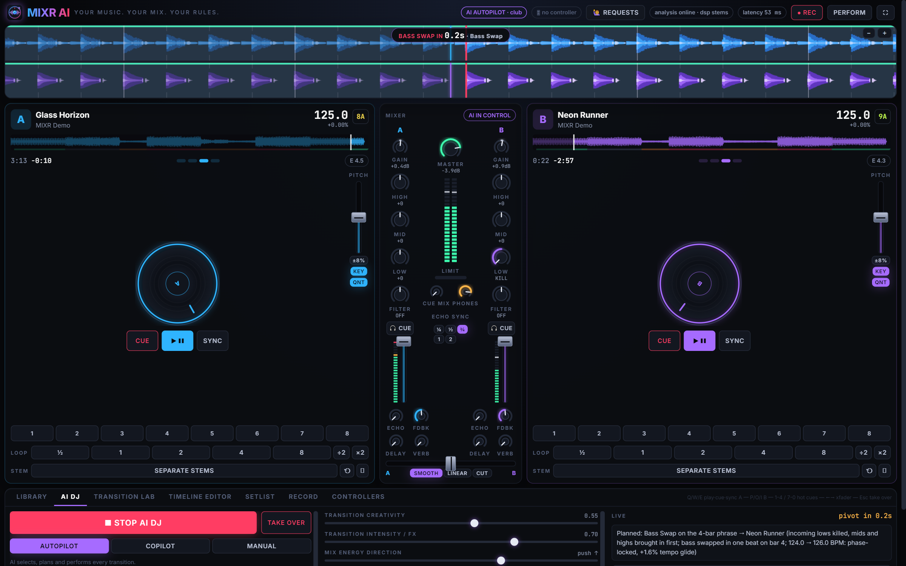

MIXR AI is DJ software with a built-in AI DJ. Load your own songs and it mixes them like a pro, with beatmatched bass swaps, echo outs, filter sweeps and drop switches. Or take over the decks yourself.
Download for Windows ▶ Try it in your browser
MIXR analyses every song (tempo, beat grid, key, energy, phrases), then plans each transition the way a working DJ would.
Autopilot picks the next track, plans the mix and performs it live. Copilot suggests and you approve. Manual hands you the decks.
Bass swap, long blend, echo out, build-up drop switch, double drop, fake-out drop, tease, tempo bridge, loop roll, quick cut, acapella mashup and creative FX, all on the beat and the phrase.
It finds the drops, hooks and choruses, lets them play out, and never cuts a song mid-chorus or right before its drop. Choose Quick, Balanced, Full or Adaptive mix length.
The desktop app transcribes lyrics on your computer and links songs through matching words, phrases and themes, landing the next song's line right after the last one.
Pick two songs and hear three different AI transitions rendered side by side before you commit to one.
Plug and play with popular controllers, including LED and VU feedback, plus MIDI Learn for anything else.
Show a QR code and guests can request songs from their phones. Requests pop up right next to your decks.
Record your set live, or have the AI render a whole setlist offline, then export it to WAV or MP3.
Tempo changes without the chipmunk effect. The AI prefers keys that sound good together (Camelot wheel).
Fine-tune any AI transition on a timeline, or generate a whole setlist by mood, energy curve and length.
From install to your first mix in about two minutes.
The full mixer and AI DJ run inside the web page. Load the 8 demo tracks or drag in your own songs. They're analysed on your computer and stay in your browser; nothing is uploaded.
▶ Open MIXR AI in the browser| Browser | Windows app | |
|---|---|---|
| AI DJ, all transitions, Transition Lab, timeline editor, setlists | ✓ | ✓ |
| Upload and analyse your own music | ✓ | ✓ |
| Record & export WAV / MP3 | ✓ | ✓ |
| DJ controllers (MIDI) | ✓ Chrome / Edge | ✓ |
| Wordplay transitions (lyrics transcribed on your PC) | — | ✓ |
| Stem separation (vocals / drums / bass) | — | ✓ |
| Song requests from guests' phones | — | ✓ |
| Works offline, large libraries | — | ✓ |
MIXR AI is new and not code-signed yet, so Microsoft SmartScreen shows a warning the first time. Click More info → Run anyway.
Yes. MIXR AI is free to download and use.
No. Those services encrypt their audio and their terms forbid mixing it in DJ apps. MIXR works with music files you own, such as purchases from Bandcamp or Beatport, your own productions, or royalty-free libraries.
There's no Mac app yet, but the browser version runs on a Mac in Chrome or Edge.
No. In both the app and the browser version, all analysis and mixing happens on your own computer. MIXR doesn't need an account and never uploads your songs. In the browser version your library is saved in that browser, so clearing your site data removes it.
Most MIDI DJ controllers work. Use the Controllers tab: it detects your device, and MIDI Learn lets you map any knob, fader or button in a few seconds.
Free for Windows 10 and 11.
Download MIXR AI